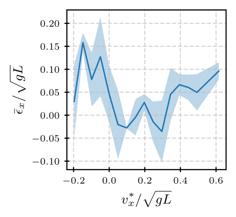
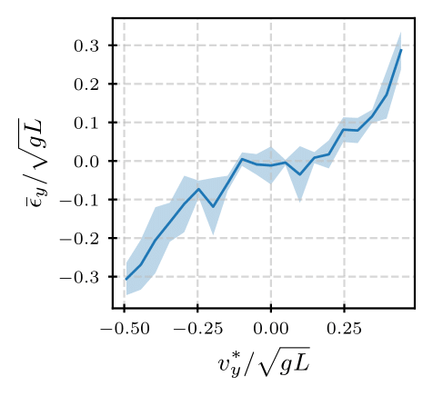
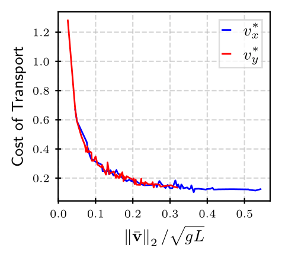
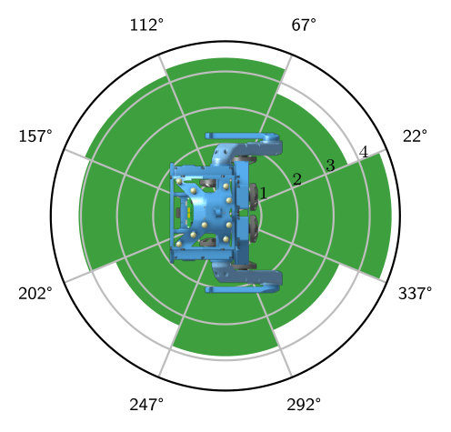

IEEE-RAS International Conference on Humanoid Robots (Humanoids 2025)
Bipedal locomotion is a key challenge in robotics, particularly for robots like Bolt, which have a point-foot design. This study explores the control of such underactuated robots using constrained reinforcement learning, addressing their inherent instability, lack of arms, and limited foot actuation. We present a methodology that leverages Constraints-as-Terminations (CaT) and domain randomization techniques to enable sim-to-real transfer. Through a series of qualitative and quantitative experiments, we evaluate our approach in terms of balance maintenance, velocity control, and responses to slip and push disturbances. Additionally, we analyze autonomy through metrics like the cost of transport and ground reaction force. Our method advances robust control strategies for point-foot bipedal robots, offering insights into broader locomotion.
Velocity tracking, autonomy and robustness




@inproceedings{roux2025bolt,
title={Constrained Reinforcement Learning for Unstable Point-Feet Bipedal Locomotion Applied to the Bolt Robot},
author={Constant Roux and Elliot Chane-Sane and Ludovic de Matteïs and Thomas Flayols and Jérôme Manhes and Olivier Stasse and Philippe Souères},
booktitle={2025 IEEE-RAS 24th International Conference on Humanoid Robots (Humanoids)},
year={2025}
}